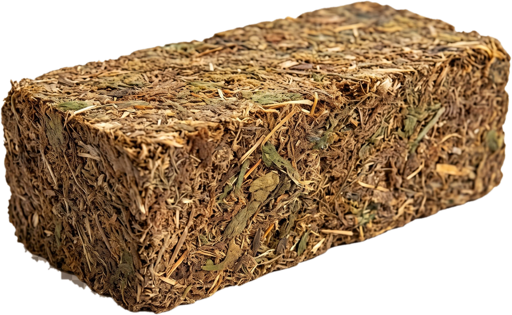
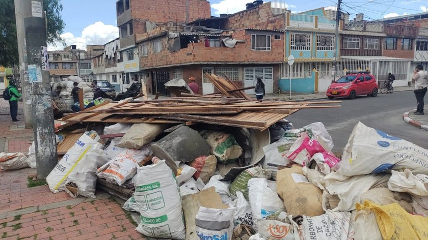
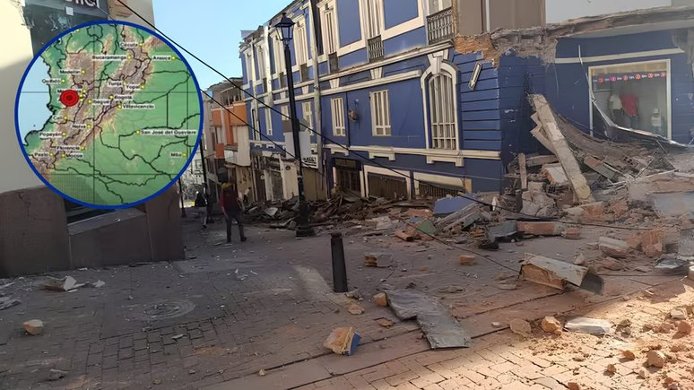
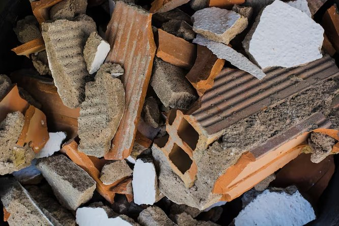
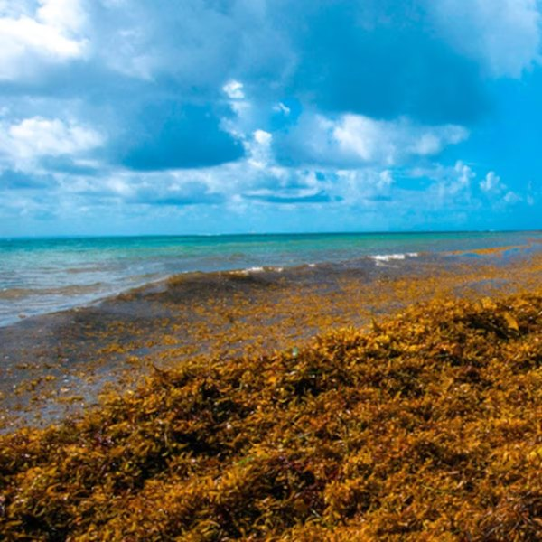

Politécnico Grancolombiano · Bogotá
Del mar, al muro.
Ladrillos ecológicos de sargazo y escombro reciclado, curados en frío y sin hornos.

Quiénes somos
Un residuo del Caribe. Otro de Bogotá. Un mismo material.
KELP BRICK es un proyecto del programa de Negocios Internacionales del Politécnico Grancolombiano. Recolecta sargazo, la macroalga que llega a las costas colombianas, antes de que se descomponga, y lo combina con residuos de construcción y demolición recuperados en Ciudad Bolívar, localidad 19 de Bogotá.
El ladrillo se cura en frío por prensado, sin hornos y sin las emisiones de CO₂ de la cocción. Cada ladrillo convierte dos problemas ambientales en un material de construcción accesible, dentro de un modelo de economía circular.
Video del proyecto · video/presentacion.mp4
El problema
Dos crisis. Una misma oportunidad.
de 300 viviendas evaluadas en Ciudad Bolívar presenta alta vulnerabilidad sísmica; 56 representan riesgo incluso antes de un sismo. Al mismo tiempo, el escombro se arroja en laderas y espacio público, y el sargazo invade cada año las costas del Caribe colombiano.

Escombros en el espacio público
Mal manejo y arrojo indiscriminado en laderas y calles.

Riesgo sísmico en laderas
Viviendas construidas sin reforzamiento y bajo amenaza de deslizamientos.

Residuos de construcción
Acumulación e inadecuada disposición final de RCD.

Arribazón de sargazo
Se descompone, emite gases y asfixia arrecifes y fauna marina.
Cada año el sargazo llega al Caribe y el escombro se acumula en las laderas de Bogotá. KELP BRICK los une en un ladrillo prensado en frío, sin hornos, con un costo de producción de cinco mil pesos.
Arrastre para girar
Anatomía del ladrillo
Qué hay dentro.
Sargazo deshidratado
~40%Alga marina recolectada, lavada, secada y triturada. Fibra estructural que reduce la densidad.
Áridos reciclados (RCD)
~30%Escombros de construcción de Ciudad Bolívar, triturados y tamizados.
Arena fina tamizada
~15%Obtenida de RCD procesados. Mejora la compactación y la homogeneidad.
Aglomerante (cal/cemento)
~10%Ligante de bajo impacto que activa la cohesión sin altas temperaturas.
Agua
~5%Curado en frío a temperatura ambiente.
Porcentajes estimados del prototipo en desarrollo. Pueden variar según las pruebas de resistencia y control de calidad.
Proceso
Del residuo al ladrillo, en cinco pasos.
Recolección y clasificación barrial
Puntos verdes acopian el escombro; el sargazo llega seco, lavado y compactado. Se retiran plásticos, basuras y metales.
Triturado de insumos
El escombro se convierte en gravilla fina. El sargazo se muele hasta una fibra natural que actúa como aglutinante.
Mezclado dosificado
Arena de escombro, fibra de sargazo, agua y un mínimo de aglomerante sostenible hasta lograr una masa homogénea.
Prensado en molde
Presión hidráulica o prensa manual de bajo costo: compacta, elimina cavidades de aire y da resistencia estructural.
Curado y control de calidad
De 14 a 28 días a sombra y sol. Cada lote se prueba en resistencia antes de salir a obra.
Costos
Lo que cuesta hacer un ladrillo.
Materia prima por ladrillo
$5.000 COP
Equipamiento inicial del prototipo
$75.000 – $120.000 COP
Calculadora de costos
¿Cuántos ladrillos quiere fabricar?
Insumos: sargazo, escombros triturados, cemento o cal, agua y aditivo, a $5.000 por ladrillo. Maquinaria y equipos del prototipo: molde, prensa manual, elementos de protección y envío de muestra ($75.000 a $120.000). Estimación del prototipo; la maquinaria a escala industrial se definirá con cotización.
Hacia la escala industrial
Preparar el sargazo
Lavadora, deshidratador o secador, molino y tamiz.
Procesar el escombro
Trituradora, molino de impacto, zaranda vibratoria, separador magnético y banda transportadora.
Fabricar
Mezcladora industrial, prensa hidráulica, moldes y área de curado.
Controlar la calidad
Balanza, máquina de ensayo de compresión, medidores de humedad y absorción, y tamices.
Comparador
¿Cómo se compara KELP BRICK?
Cuatro materiales de construcción frente a frente: materias primas, residuos aprovechados, proceso, peso, resistencia, absorción, costo e impacto ambiental.
Los valores de KELP BRICK corresponden a objetivos de diseño y estimaciones del prototipo. Las cifras de los demás materiales son valores de referencia.
Modelo de negocio
Un modelo circular, de punta a punta.
Detalle
Seleccione un elemento
Pase el cursor o toque cada elemento para ver cómo se obtiene, se fabrica y se comercializa el ladrillo.
Business Model Canvas
Clientes
Quién usa el ladrillo
Constructoras, ferreterías y distribuidores, familias que construyen, proyectos de vivienda sostenible y la Alcaldía Local.
Canales
Cómo llega
Venta directa, ferreterías de Ciudad Bolívar, redes sociales, ferias de emprendimiento y alianzas con proyectos sostenibles.
Relación
Confianza con evidencia
Demostraciones y muestras del ladrillo, acompañamiento en la compra, descuentos por volumen y comunicación por redes y WhatsApp.
Ingresos
Más que ladrillos
Venta de ladrillos, agregados reciclados del escombro procesado y nuevos productos de sargazo.
Aliados
Quién lo hace posible
Empresas de demolición, recolectores de sargazo, ferreterías, constructoras, universidades, entidades ambientales y proveedores de maquinaria.
Actividades
Qué hace el equipo
Conseguir y seleccionar materiales, probar mezclas, elaborar prototipos, evaluar resistencia y apariencia, e investigar el mercado.
Equipo fundador
Cuatro personas, una cadena circular.
CEO / Directora General
Mariana Rubio Pinzón
Lidera la estrategia, coordina la visión de negocio y las relaciones institucionales.
Directora de I+D
Eimmy Crystal Melo Pinzón
Investiga la composición del sargazo, su deshidratación y las mezclas óptimas con RCD.
Director Comercial
David Sierra
Analiza el mercado y gestiona alianzas con constructoras, ferreterías y entidades distritales.
Directora de Sostenibilidad
Valeria Perilla
Monitorea el impacto ambiental, el cumplimiento normativo (Res. 1257/2021) y la coordinación comunitaria.
Impacto
Cinco objetivos, un material.
Industria, Innovación e Infraestructura
Un material de construcción alternativo.
Ciudades y Comunidades Sostenibles
Escombros ilegales convertidos en materiales accesibles.
Producción y Consumo Responsables
Economía circular aplicada.
Acción por el Clima
El curado en frío elimina hornos y emisiones de CO₂.
Vida Submarina
Extracción de sargazo antes de que destruya ecosistemas marinos.
Identidad
Misión
Desarrollar soluciones innovadoras para el sector de la construcción mediante el aprovechamiento de sargazo y residuos de construcción recuperables, creando productos seguros que promuevan la economía circular y aporten al ambiente y la economía.
Visión 2030
Ser el emprendimiento de referencia en Bogotá por ofrecer materiales derivados del aprovechamiento de residuos, con procesos verificables, alianzas estratégicas y una oferta construida sobre evidencia técnica real.